Social Media · Art Direction
When Government
Learned to Meme
Reimagining public communication for Santa Maria City Hall - turning a stiff, ignored government account into a social media presence people from across Brazil actually wanted to follow.


The Challenge
A government that nobody listened to
Before Agência CENTRO took over, Santa Maria's official social media presence was exactly what you'd expect from a city government: formal, stiff, and completely ignored. The content followed a rigid institutional template - announcements announced, services listed, dates commemorated - but the city's residents had long stopped paying attention.
The profiles had little to no engagement. People didn't follow. They didn't share. They didn't feel like the city was talking with them - it was broadcasting at them.
Then COVID-19 hit. And everything had to change.
The Approach
Using the internet's language to reach people
The meme used to follow the brief. Now it leads.
During the pandemic, with the population's morale low and trust in institutions fragile, the conventional institutional tone wasn't just ineffective - it was actively counterproductive. We needed a different approach.
We started experimenting with memes and internet culture to communicate COVID-19 guidelines. The goal wasn't to be funny for the sake of it - it was to meet people where they already were, speak in their register, and make them stop scrolling.
It worked. Not just locally: people from outside Santa Maria, from other states, started engaging with and sharing the posts. The account that nobody followed became one people actually sought out.
What started as a pandemic-era experiment evolved into a complete creative philosophy. We expanded from COVID-19 content to public works announcements, service notices, and seasonal campaigns - always looking for the trend, the cultural moment, the format that would make the content feel native to the feed, not foreign to it.
Phase 01 — Pandemic Communication
Meeting people during the hardest moments
The first posts to break the mold came during the COVID-19 lockdowns. Humor and empathy replaced bureaucratic language - and people responded.
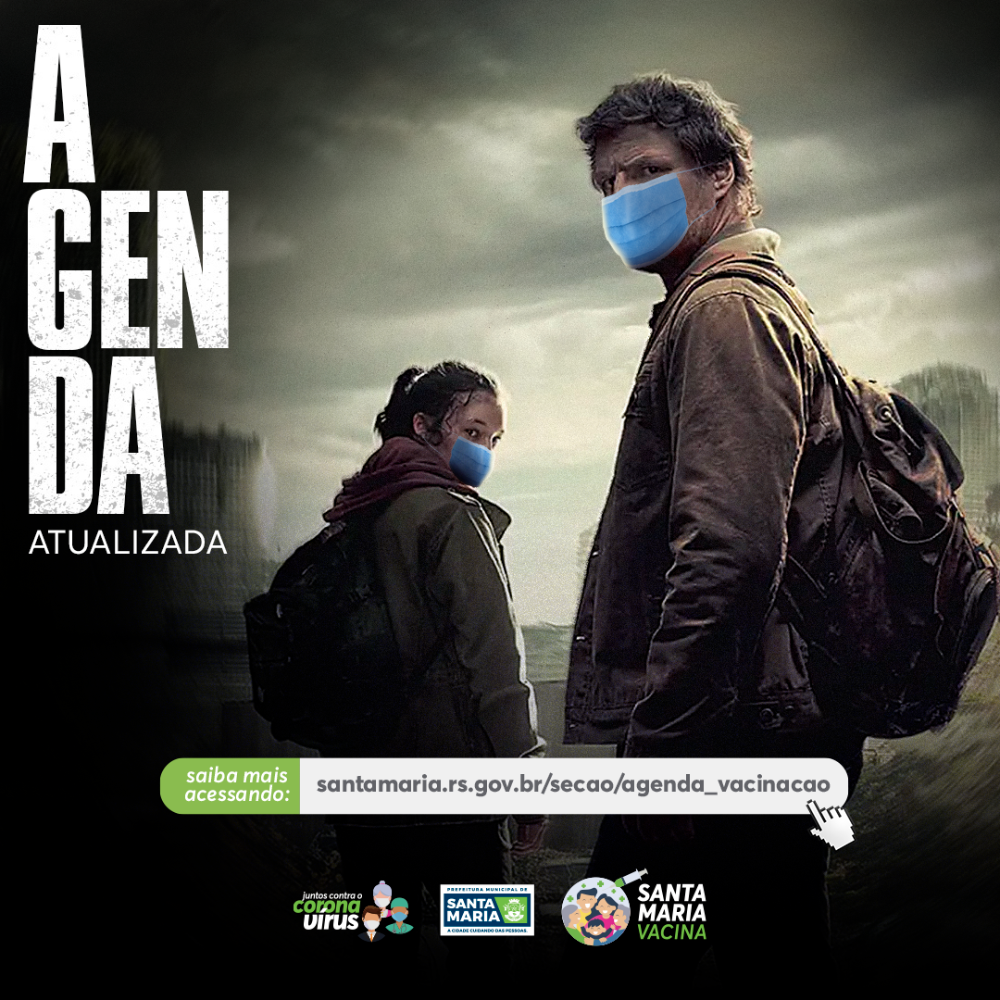
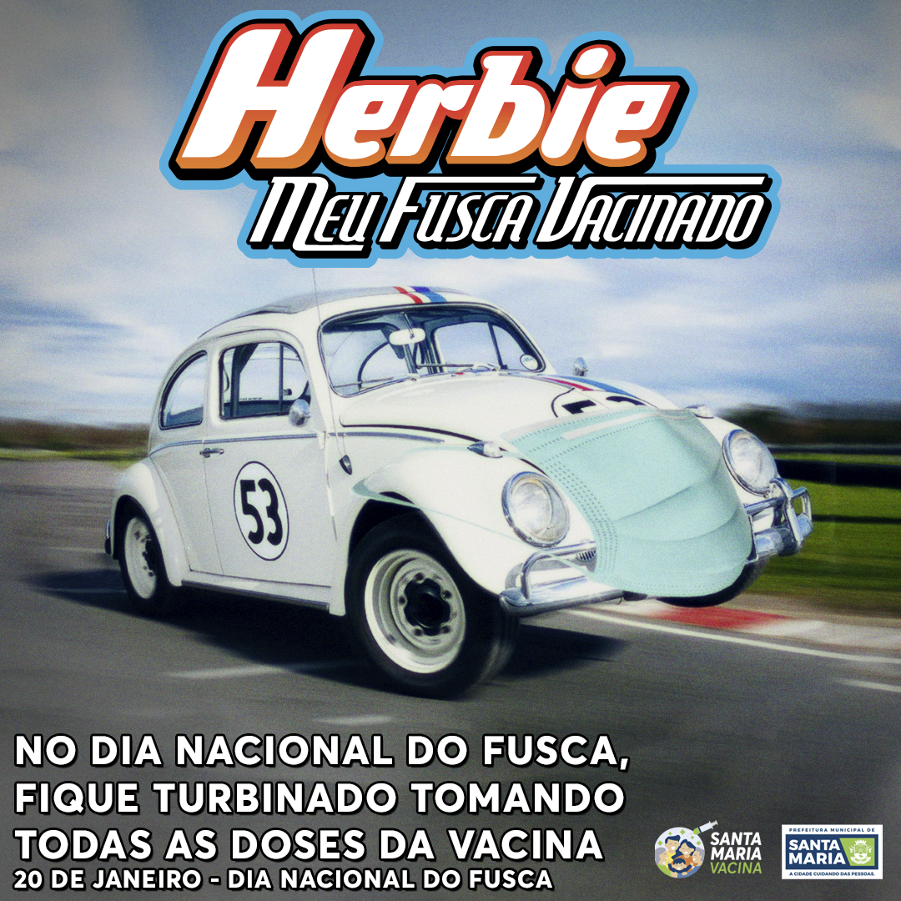
Evolution
From exception to creative philosophy
Phase 02 — Full Campaign Range
Services, dates, awareness - nothing off-limits
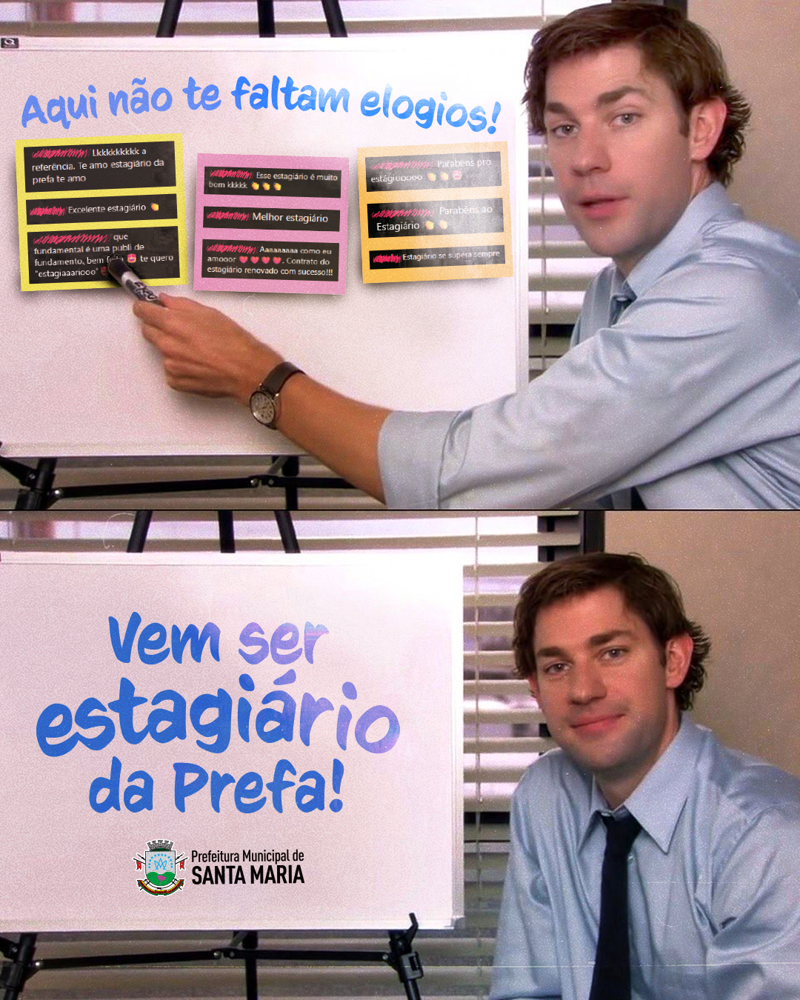
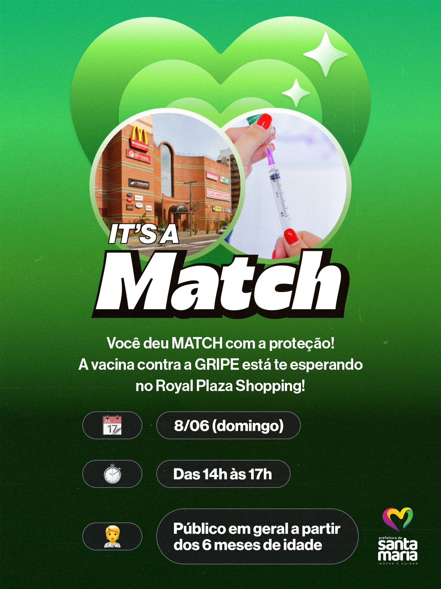
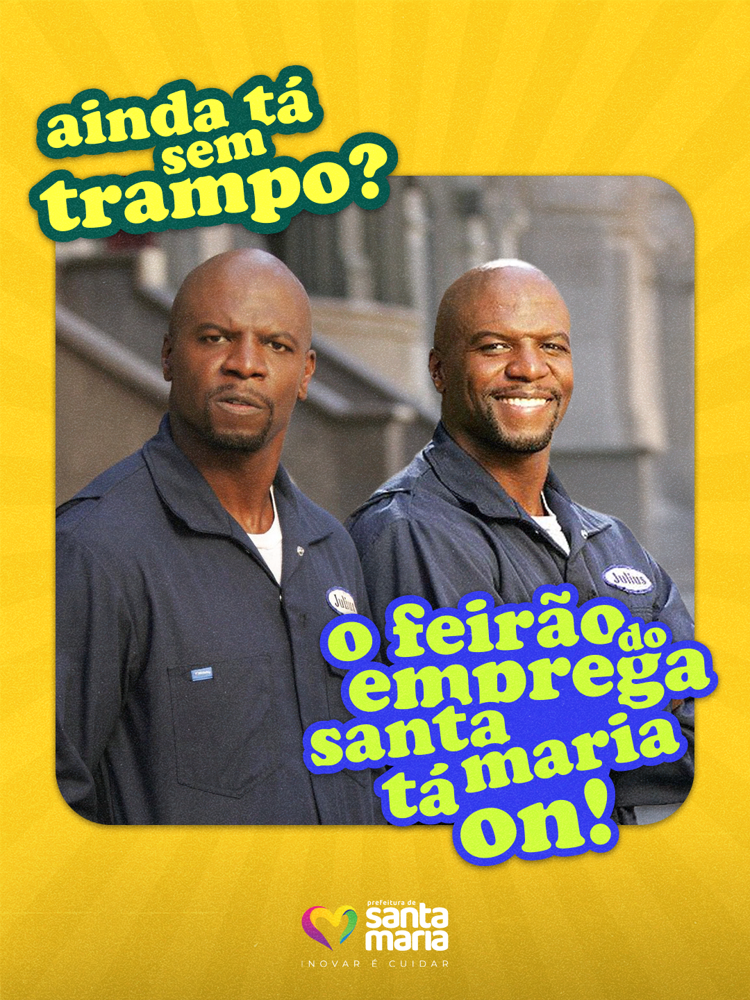
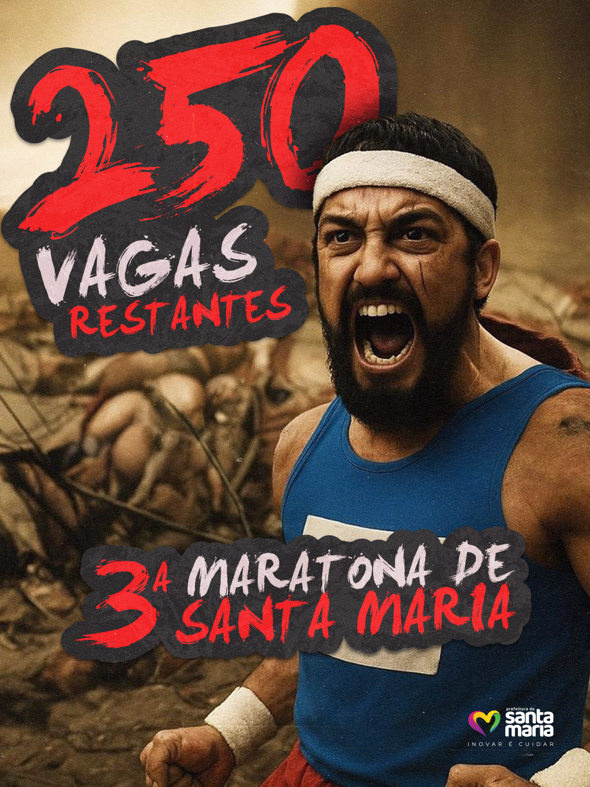
Recognition
Three awards, one philosophy
The results weren't just felt in engagement numbers - they were formally recognized by the industry.
Phase 03 — Trend-First Strategy
The meme comes before the brief
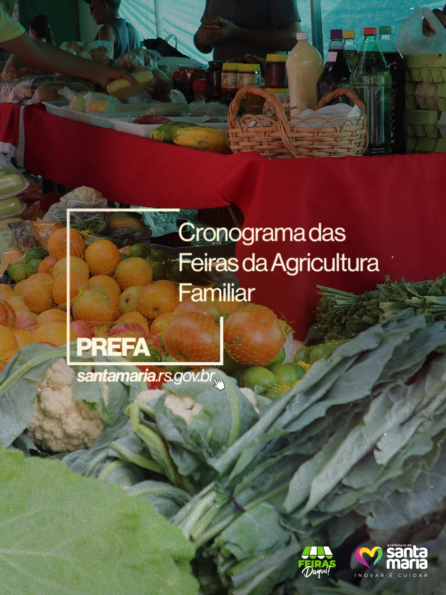
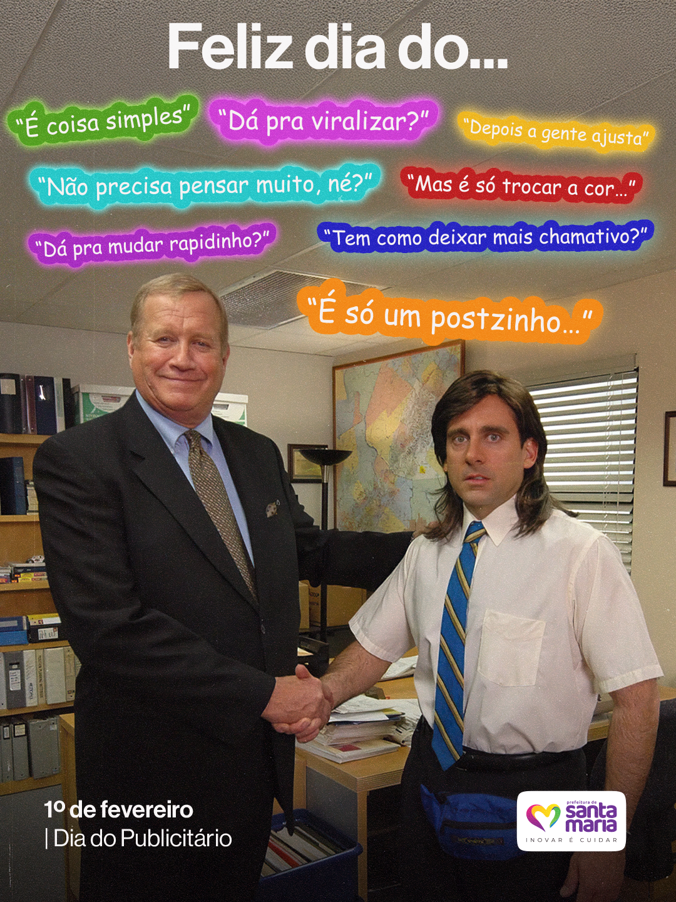
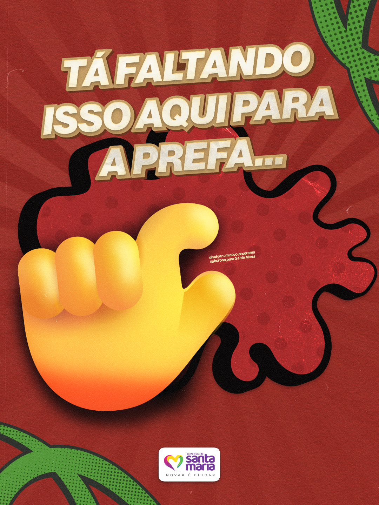
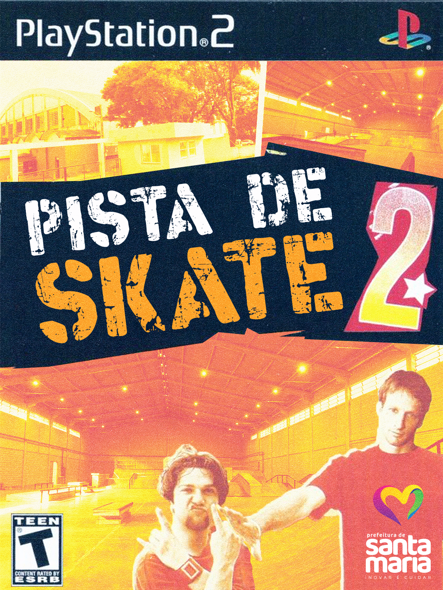
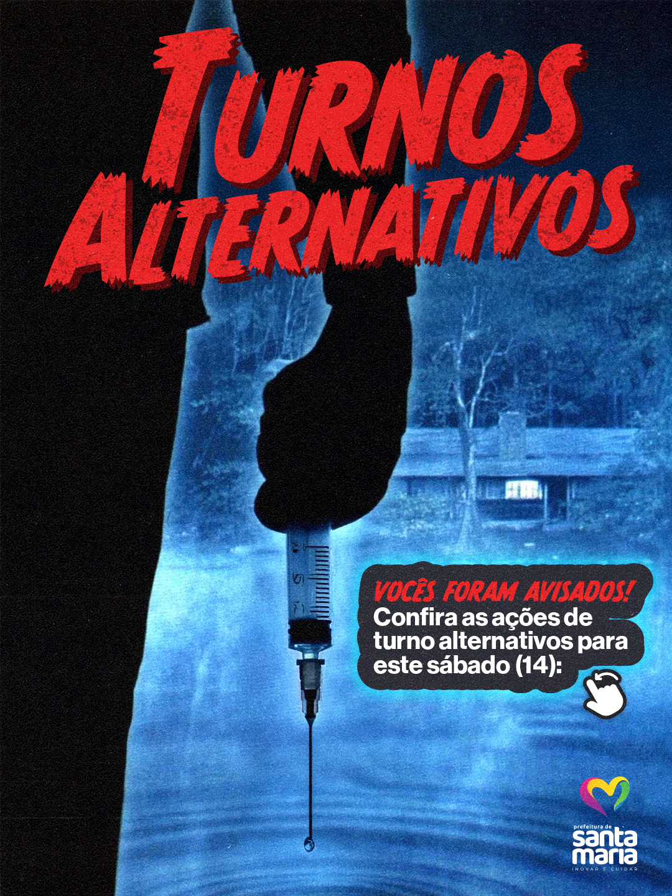
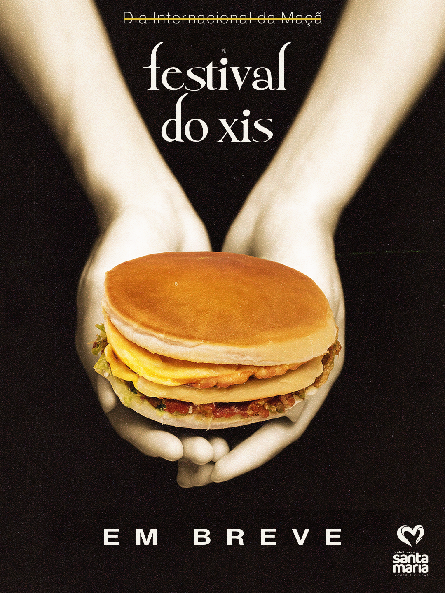
Impact
Pioneers in a movement that spread nationwide
Santa Maria became one of the first municipal governments in Brazil to adopt meme-based, internet-native communication as a deliberate strategy - not as a one-off experiment, but as the core creative language for the official city account.
The engagement shift was immediate: content that had been ignored for years was suddenly being shared, commented on, and discussed. More importantly, residents began to feel a genuine connection with the city's communication — like it was made for them, not issued to them.
The model's impact stretched beyond the city limits. Across Brazil, municipal governments began adopting similar approaches to their social media. What we pioneered in Santa Maria became a playbook others would follow.
The biggest signal: people from outside Santa Maria - other cities, other states - started following and engaging with the account. A local government account had become genuinely interesting to strangers. That doesn't happen by accident.
Want to talk about this project?
Open to full-time, part-time, or freelance opportunities.